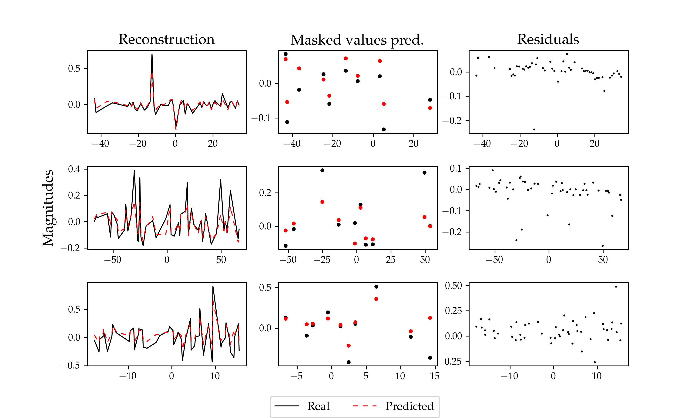

ASTROMER
Enhancing astronomical learning with pre-trained representations

ASTROMER is a transformer model trained to reconstruct millions of stars
while learning useful representation of astronomical lightcurves.

ASTROMER provides universal informative representations of variable stars
to improve and accelerate the performance of specific automatic learning models.